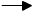

Автоматы Мили с конечной памятью.
Каждое состояние автомата Мили однозначно ( т.е. с точностью до эквивалентности ) определяется конечным набором входных слов вместе с соответствующими выходными словами. Это означает, что автомат Мили может "содержать" только конечное множество входно-выходных связей. Поэтому выход зависит только от некоторого ограниченного числа предыдущих входов. Мы увидим, однако, что здесь не существует функциональной зависимости, даже при использовании выходов в предыдущие моменты времени в качестве дополнительных аргументов.
Определение
Автомат Мили A = ( Z, X, Y, f, g ) называется автоматом Мили с конечной памятью, если для него существуют натуральные числа p, q и отображение h : X p+1 * Y q  Y такие, что для всех z из Z и всех слов w = x1 ... xk из F(X), где k > max (p, q), выполнено равенство
yk=h(xk, xk-1, ... , xk-p, yk-1, yk-2, ... , yk-q)
[ При этом считается, что y1 ... yk = g * (z, x1 ... xk) ] .
Наименьшее число m, для которого существуют не превышающие его числа p и q, т.е. m=max(p, q), удовлетворяющие приведенному выше условию, называется памятью автомата Мили А.
Итак, автомат Мили имеет конечную память
m, если существует функция
h, с помощью которой выход в любой наперед
заданный момент времени k может быть
определен только по входу xk в этот момент и по входам и выходам
xk-1, ... , xk-m и
yk-1, ... , yk-m в предыдущие
m моментов времени, без учета состояний
автомата.